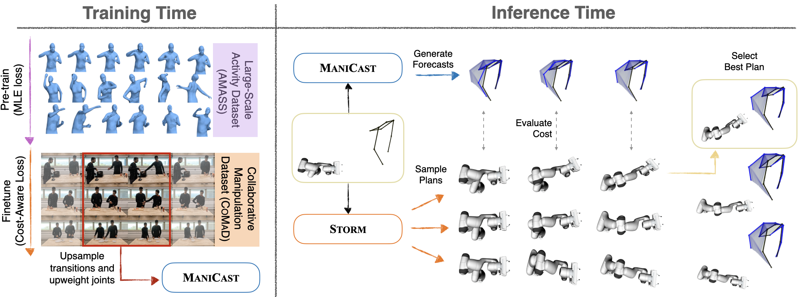

with Cost-Aware Human Forecasting

Overview of our framework ManiCast, which learns cost-aware human motion forecasts and plans with such forecasts for collaborative manipulation tasks. At train time, we fine-tune pre-trained human motion forecasting models on task specific datasets by upsampling transition points and upweighting joint dimensions that dominate the cost of the robot's planned trajectory. At inference time, we feed these forecasts into a model predictive control (MPC) planner to compute robot plans that are reactive and keep a safe distance from the human.
Abstract
Seamless human-robot manipulation in close proximity relies on accurate forecasts of human motion. While there has been significant progress in learning forecast models at scale, when applied to manipulation tasks, these models accrue high errors at critical transition points leading to degradation in downstream planning performance. Our key insight is that instead of predicting the most likely human motion, it is sufficient to produce forecasts that capture how future human motion would affect the cost of a robot's plan. We present ManiCast, a novel framework that learns cost-aware human forecasts and feeds them to a model predictive control planner to execute collaborative manipulation tasks. Our framework enables fluid, real-time interactions between a human and a 7-DoF robot arm across a number of real-world tasks such as reactive stirring, object handovers, and collaborative table setting. We evaluate both the motion forecasts and the end-to-end forecaster-planner system against a range of learned and heuristic baselines while additionally contributing new datasets.
Video
Human-Robot
Collaborative Manipulation
We present closed-loop, real-time collaborative human-robot manipulation across three different kitchen tasks by combining learned human pose forecasts with model predictive control.
(Top) The x-position of the reaching human's wrist in a Reactive Stirring test set episode. x ≥ 0.4 indicates the wrist is near the pot.
(Bottom) Base model's forecasts (trained only on large scale motion data) have high errors during transitions and lag behind the current pose.
ManiCast, trained on CoMaD by upsampling transitions, predicts the reaching human's pose faster than tracking the current pose.
Our forecasting method outperforms baselines on Final Displacement Errors (FDE) on all joints, and more specifically shows great improvements on wrist joints that are critical to the Human-Robot interactions.
Qualitative Results
Reactive Stirring
While the robot is stirring the pot, the human periodically wants to add more vegetables to the pot. For this interaction to occur comfortably, the robot must anticipate the human's intent to enter its workspace and pause its stirring momentarily before resuming when the human plans to exit its workspace. Robot manipulation planning is often slow and leads to an uncomfortable retraction, whereas planning with ManiCast forecasts ensures a faster reaction time both when the human moves to place vegetables and when the human is returning to chopping more vegetables.
Collaborative Table Setting
The human and robot each have their own respective goals, namely picking up different items from the table which are in close proximity. Carrying out their plans to pick up the items may lead to collisions or uncomfortable interactions. Compared to simply planning robot manipulation based on the current position of the human, incorporating ManiCast forecasts into the planner's cost function ensures safety and smoothness.
Object Handover
When performing an object handover, humans naturally predict the handover location and move their hand to that spot. In order for a robot to do so, it must forecast the handover location and plan its actions accordingly. Compared to the robot following the human's current pose or planning under the assumption that the human will be moving at a constant velocity, planning with ManiCast forecasts produces seamless and realistic interactions.
Paper
ManiCast: Collaborative Manipulation
with Cost-Aware Human Forecasting
Kushal Kedia, Prithwish Dan, Atiksh Bhardwaj, Sanjiban Choudhury
@inproceedings{
kedia2023manicast,
title={ManiCast: Collaborative Manipulation with Cost-Aware Human Forecasting},
author={Kushal Kedia and Prithwish Dan and Atiksh Bhardwaj and Sanjiban Choudhury},
booktitle={7th Annual Conference on Robot Learning},
year={2023},
url={https://openreview.net/forum?id=rxlokRzNWRq}
}